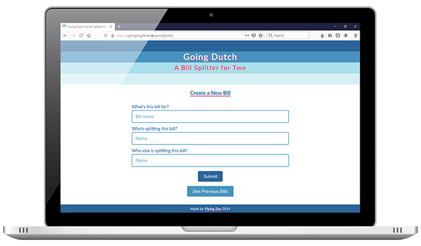
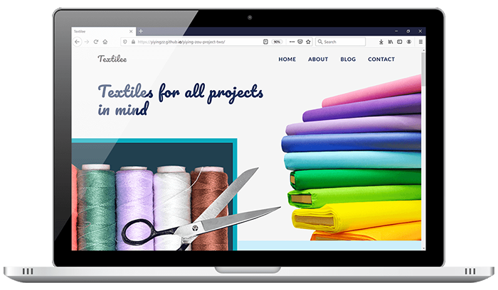

About Me
My name is Yiying Zou and I'm a front-end web developer based in Toronto.
I started coding in middle school by building anime fansites as a hobby. With a background in visual arts, I'm excited to combine my creativity and problem-solving skills to create beautiful websites and applications that enrich people's lives and are pleasing to look at.
When I'm not coding, you'll find me painting (I'm into oil & digital!) or dancing to some 90s tunes. I'm happiest when I get to learn, explore, and create.

My Toolbox
-
HTML5
-
CSS3
-
Sass
-
JavaScript
-
jQuery
-
React
-
Git
-
Github
-
Adobe Photoshop
-
Firebase
-
Responsive Design
-
Web Accessibility
Things I've Made
-

Gif Me a Movie.
No time to watch a movie? Get 3 gifs summarizing a film title you search for.
A group project made with Andrea Lacson, Andrew A. Rubesa, and Vipin Kirthane.
- React
- API
- CSS3
- Sass
- HTML5
- Group/Mob Programming
-

Yiying Yells (Gently).
My version of Simon Says-- hence, Yiying Yells-- a game to test your memory with colour-changing blocks.
- JavaScript
- jQuery
- CSS3
- Sass
- HTML5
-

Going Dutch.
An app for splitting bills between two people and lets you view previous bills.
- React
- Firebase
- CSS3
- Sass
- HTML5
-

Food & A Flick.
A date-planning app that lets you search for a recipe and a movie.
A pair programming project with Keil Martin.
- API
- JavaScript
- jQuery
- Sass
- CSS3
- HTML5
- Pair Programming
-

Get In Touch
Thank you for visiting my site!
If you'd like to chat about my work, feel free to reach out. I'd love to hear from you!
My email: yiyingzou@gmail.com